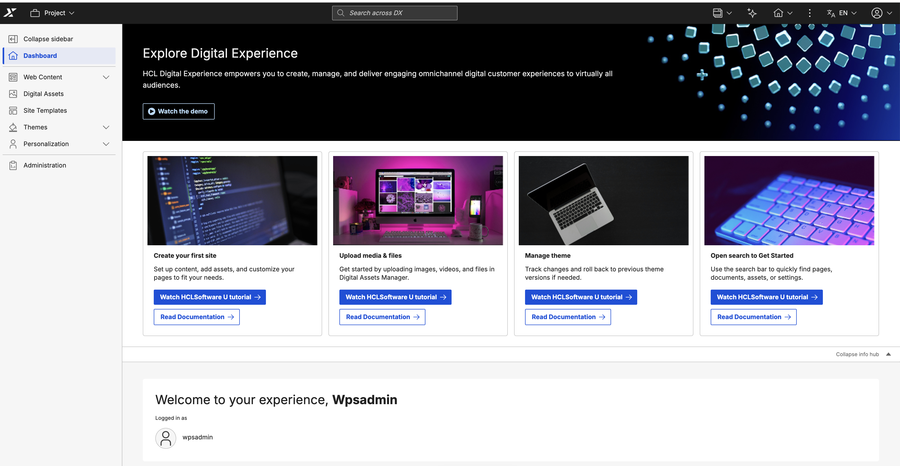
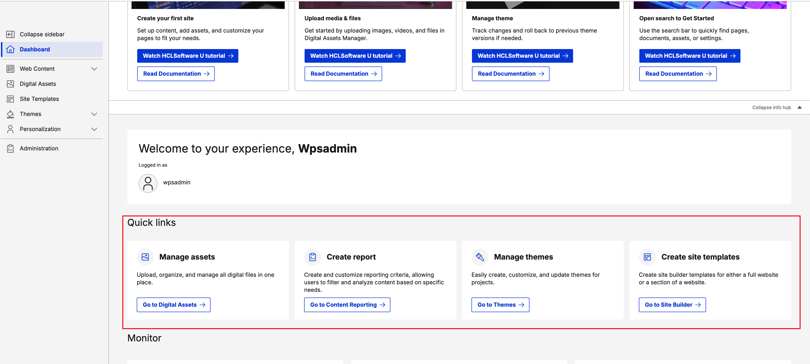
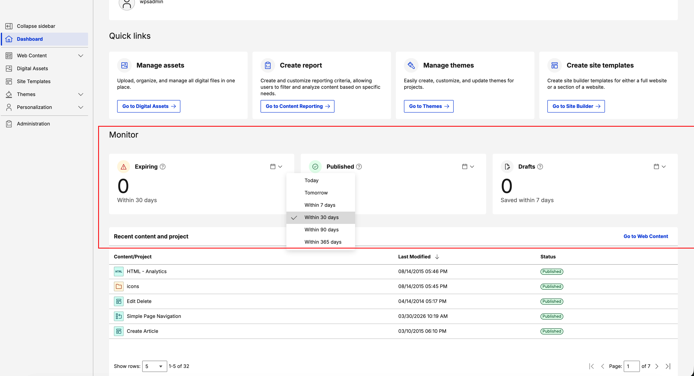
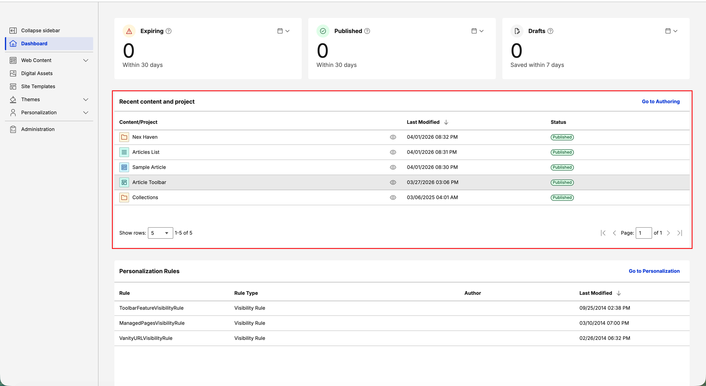
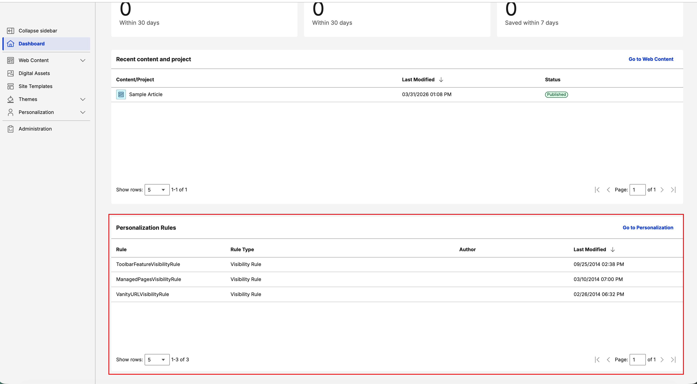

Dashboard
The Practitioner Studio Dashboard is a modern, React-based dashboard that replaces the Practitioner Studio homepage. It includes widgets, quick links, and an info hub to help you manage content, track status, and personalize user experiences more efficiently.

The dashboard includes the following widgets:
- Status monitoring: Shows items that require approval or attention, including expiring content.
- Recent content items: Provides quick access to your latest work.
- Personalization rules (PZN): Helps you manage user experiences.
The dashboard also includes an interactive banner that displays dynamic announcements, tips, and tutorials. These can include notifications about new CF releases and links to helpful tutorials.
Explore Digital Experience info hub
The dashboard includes an Explore Digital Experience info hub that provides quick access to tutorials and documentation.
This section features interactive cards with resources for common tasks, such as:
- Create your first site: Set up content, add assets, and customize pages to meet your needs.
- Upload media and files: Upload images, videos, and files in Digital Assets Manager.
- Manage themes: Create, customize, and manage themes to control the visual appearance and user experience of your DX sites, including layout, styling, and branding.
- Use search to get started: Use the search bar to quickly find pages, documents, assets, or settings.
Each card includes the following options:
- Watch HCLSoftware U tutorial: View video demonstrations.
- Read documentation: Access detailed written guidance.
You can collapse or expand the info hub by using the Collapse info hub toggle to maximize your workspace.
Welcome header
The Practitioner Dashboard includes a personalized welcome header that greets you with "Welcome to your experience," followed by your username.
Below the greeting, the header displays "Logged in as" with your username and profile icon to indicate the active session.
Quick links
The dashboard provides quick access to common tasks through the following shortcuts:

- Manage assets: Upload, organize, and manage digital files in the Digital Assets interface.
- Create report: Create and customize reports to filter and analyze content based on your needs.
- Manage themes: Create, customize, and update themes to maintain consistent branding and design.
- Create site templates: Create templates for a full site or a site section to streamline development.
Monitor
Use the Monitor section to track real-time content status and activity across three key metrics:

- Expiring: Shows the number of content items that will expire within a selected timeframe to help you proactively manage content that requires renewal or updates.
- Published: Shows the number of content items published within a selected timeframe to track publishing activity.
- Drafts: Shows recently saved draft content within a selected timeframe to help you quickly find and resume in-progress work.
Each metric includes a customizable time filter: Today, Tomorrow, Within 7 days, Within 30 days, Within 90 days, and Within 365 days.
Note
- For Expiring, Within 7 days includes the current day and the next six days.
- For Published and Drafts, Within 7 days includes the current day and the previous six days.
Recent content and project
Use the Recent Content and Project widget to view your most recently modified content items and projects.

- Select the eye icon on a content item to view it directly.
- Use the Go to Authoring link in the top-right corner for quick access to the full Web Content management interface.
Note
- This widget shows only the 100 most recent content items.
- Recent Content displays only the content items you modify.
Personalization rules
Use the Personalization Rules widget to monitor the personalization (PZN) rules that customize user experiences on your website.

- The widget displays the following details: Rule, Rule Type, Author, and Last Modified.
- Rule Types for this widget include Visibility Rule, Profiler, Select Action, and Binding Rules.
- Select Go to Personalization to open the full Personalization page for complete management and configuration of your rules.
Widget configuration parameters
Use the dashboard to customize which widgets appear on your screen. To change these settings:
- Navigate to Admin > Site Management > Pages > Content Root > Practitioner Studio > Dashboard.
- Select the pencil icon on the dashboard page.
- Select Edit Shared Settings to enable or disable widgets using the configuration parameters.
Configuration parameters
| Parameter name | Type | Default value | Description |
|---|---|---|---|
RECENT_CONTENT_WIDGET |
Boolean (checkbox) | true |
Shows or hides the Recent Content widget, which displays recently accessed or modified content items. |
RECENT_STATUS_WIDGET |
Boolean (checkbox) | true |
Shows or hides the Status Monitor widget, which displays system health and alerts. |
RECENT_PZN_WIDGET |
Boolean (checkbox) | true |
Shows or hides the Personalization widget, which displays recent PZN activities and campaigns. |
Main portal configuration
Use the following ConfigEngine targets to switch between the new React-based dashboard and the classic JSP home page.
Enable the Practitioner Dashboard (modern React dashboard)
ConfigEngine/ConfigEngine.sh enable-practitioner-dashboard -DWasPassword=wpsadmin -DPortalAdminPwd=wpsadmin
Disable the Practitioner Dashboard (classic JSP home page)
ConfigEngine/ConfigEngine.sh disable-practitioner-dashboard -DWasPassword=wpsadmin -DPortalAdminPwd=wpsadmin
Note
- The Practitioner Dashboard is enabled by default and shows the React-based modern dashboard.
- You can disable it during deployment if preferred. When disabled, the classic JSP home page is displayed instead.
- You cannot disable the dashboard in DX Compose.
Virtual portal configuration
To support the modern (React-based) Practitioner Studio in new virtual portals, the existing VirtualPortal.zip asset includes XML configurations for boththe modern and classic dashboards. You can switch between dashboard versions by modifying the XML file reference in the shared setting, which ensuresexisting virtual portals remain unchanged.
By default, the shared setting uses the modern Practitioner Studio configuration. To use the classic (JSP-based) home page, add the -preCF235 suffix to the XML file name.
Default (Modern Practitioner Studio)
# XML script to create virtual portal content tree
WebSphere:assetname=VirtualPortal.zip:InitVirtualContentPortalV9.5NoWoodburn.xml
Classic (pre-CF235)
# XML script to create virtual portal content tree
WebSphere:assetname=VirtualPortal.zip:InitVirtualContentPortalV9.5NoWoodburn-preCF235.xml